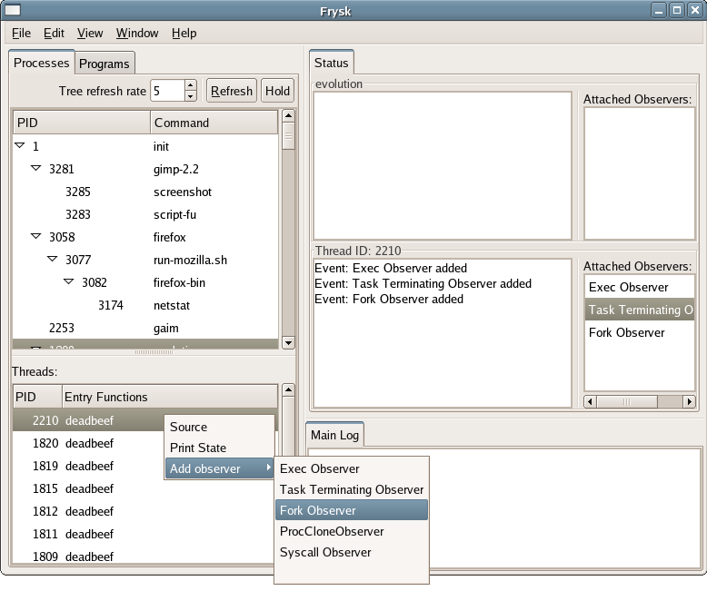
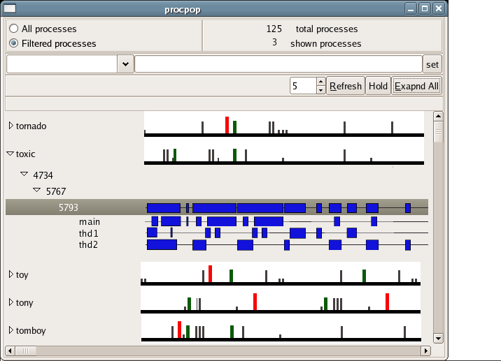
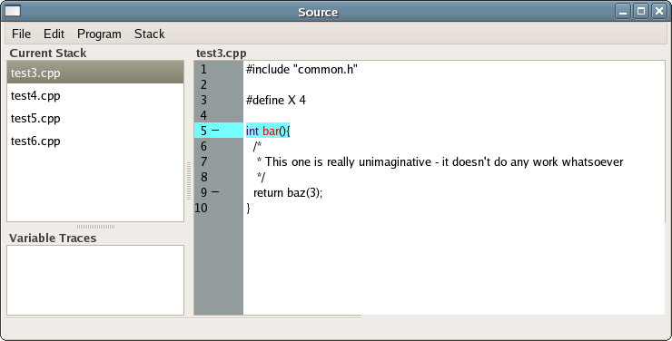

frysk Images
Last updated 2005-10-11.
Below is a work-in-progress snapshot of a process view.

Next is an earlier mock-up of the same window. Note the time-line
event viewer that is going to eventually added to the above:

Next is a partial mockup (some parts were taken from a snapshot) of
the source view window. On the left hand side is the stack and variable trace
, and in
the middle the corresponding source.

Finally, given inline code (here do_something was inlined),
the source window can display it in place.
prompt to kill when one
exceeds more than 5 minutes of cpu
prompt for
the source browser when the program eclipse is started.